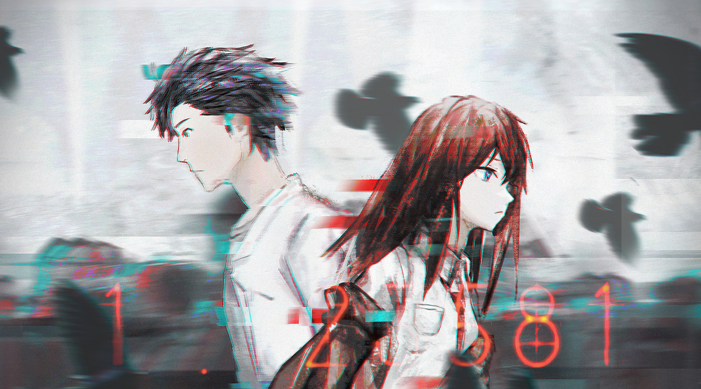

命运石之门，于我来说，是一份珍贵的相逢。
去年入石头门，看第一集的时候不明所以，也差点 想关掉，但终究因为以前一直当口头禅坚持了下去，
最终到了现在，简直到了一天不看石头门相关会疯掉的地步。看完的剧场版，崩了我几次眼泪。
我看的番中没有哪个能让我感触那么深。
所幸的是最终还是一个好结局。
——能把我的初吻还给我吗？
——才不要呢
伴随着片尾曲的响起，这个故事又告一段落。曾经被观测过的少女，也成为了一个观测者。
多少人来人往，有你一人才好，这就是属于他们的恋爱。beta线的15年，sg线的20多年，我希望他们的每一丝付出，都能获得对等的回报。
这，可能是我喜欢这首歌的原因。我在里面，听到了他们的情
——”你知道…凤凰院…凶真吗？”
——”凤凰院？”
——“是个科学家，不是一般的科学家，是狂人科学家，疯狂得简直无人能及，说话做事都颠三倒四，
周围的人一直笑话他，他说的话，他的研究，以及他的发现，都被大家无视，很不巧，
他发现的东西只有他自己能察觉，他还发现，那东西会让人陷入痛苦，受到伤害，
甚至会让世界破灭，于是他拼命试着保护大家，为了拯救世界，无数次的，不停歇地战斗，
终于…他成功地保护了所有自己重视的人，但没有人知道他做的这一切，
狂人科学家还是狂人科学家大家还是一直笑话他"
——“听起来好悲哀”
——“是吗，我倒是觉得非常动人心弦“
……………………
——”好了，快启程吧！一定有人在等着你!”
